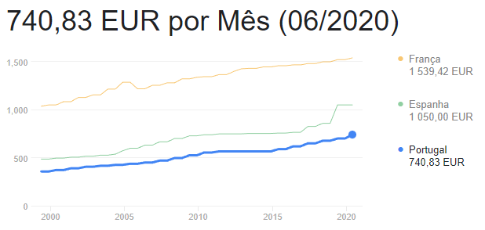

Portugal tem uma história muita vasta com milhões de anos, no entanto, as condições que temos e vivemos nos dias de hoje, são aos diversos acontecimentos que tornaram este país um sítio para o nosso desenvolvimento e das próximas gerações. Portugal após a primeira Guerra Mundial, sofreu diversos problemas internos. Este período que foi seguido por muitos problemas económicos e por uma instabilidade política, a Primeira República Portuguesa, resultou no Golpe de 28 de Maio de 1926 que deu início a um regime ditatorial em Portugal conhecido como a Ditadura Nacional, dirigida ou chefiado pelo António Salazar.
O regime salazarista ficou marcado por ser:
A condição de Portugal nem sempre foi tão má. Antigamente nós éramos o país da aventura e exploração, tendo umas das maiores colónias no planeta. Atualmente, as condições do país podem ter mudado e evoluído, porém com o tempo, ficámos numa desvantagem para com as outras áreas.
Apesar de tudo, Portugal tem uma das piores economias de Europa e muitas pessoas têm dificuldades até a arranjar um apartamento onde ficar, devido aos preços absurdos e salários a baixo da média (mínimo de 740,83 €).

Fig.1 - Salário Mínimo Portugal
Após a quarentena a condição de Portugal ficou pior e também a sua saúde, o Covid matou mais de 25 mil cidadãos e, mesmo depois da crise, Portugal continua acima da média no que conta a taxa de risco de pobreza e exclusão social (dentro da União Europeia), isso diz-nos que os problemas de Portugal são tanto financeiros como sociais.
Fig.2 - Mortes por Covid em Portugal
Já desde 21 de Novembro de 2021, que Portugal deixou de produzir eletricidade através da utilização do carvão. Esta foi uma boa notícia ao combate das alterações climáticas, pois foi esta central com o segundo maior peso nas emissões de dióxido de carbono em Portugal na última década.
Atualmente existem também múltiplas aplicações e websites que ajudam o movimento de paragem das alterações climáticas, bons exemplos são: Ecosia - Funciona como o Google, porém ganham dinheiro suficiente para plantar uma árvore a cada 45 pesquisas; Beat the micro bead: Uma aplicação especializada na identificação de micro-plásticos em marcas ou produtos com base nos ingredientes na parte detrás da embalagem. Isto são apenas exemplos que também podem ajudar a economia global, uma vez que teremos de substituir a produção excessiva de plástico por outros produtos, eventualmente.
No entanto, tudo veio mudar quando Portugal tornou um memebro da União Europeia, em 1 de janeiro de 1986, á 37 anos. A ação de Portugal na União Europeia foi um grande fator na contrução de uma Assembleia da Républica Europeia, assumindo a presidênvia do Conselho no primeiro semestre de 1992. A presidência Portuguesa prometeu e alcançou resultados essenciais para a recuperação da Europa, ancora das transições verde e digital, e sem deixar ninguem para trás. Por outro lado, continuamos com diversos problemas que teram de ser as gerações futuras a resolver, como por exemplo a pobreza existente em Portugal.
Pobreza em Portugal
De acordo com a taxa de pobreza aferida pelo instituto nacional de estatística, 17,2% da população em Portugal encontrava-se em risco de pobreza em 2018. Este valor, composto por três algarismos, um separador decimal e um símbolo matemático, condensa as vidas de mais de 1,7 milhões de pessoas. Em 2021, com os primeiros anos de pandemia, devido à quebra de rendimentos, Portugal foi atirado para a oitava posição na lista de países europeus com maior risco de pobreza e exclusão social. A deterioração na posição relativa nacional acontece depois da taxa nacional ter subido aos 22,4% no último inquérito nacional aos rendimentos e condições de vida, com mais de 2,3 milhões de pessoas a viver a baixo do limiar de pobreza, em condições de privação material severa ou com vínculos fracos ao mercado de trabalho.